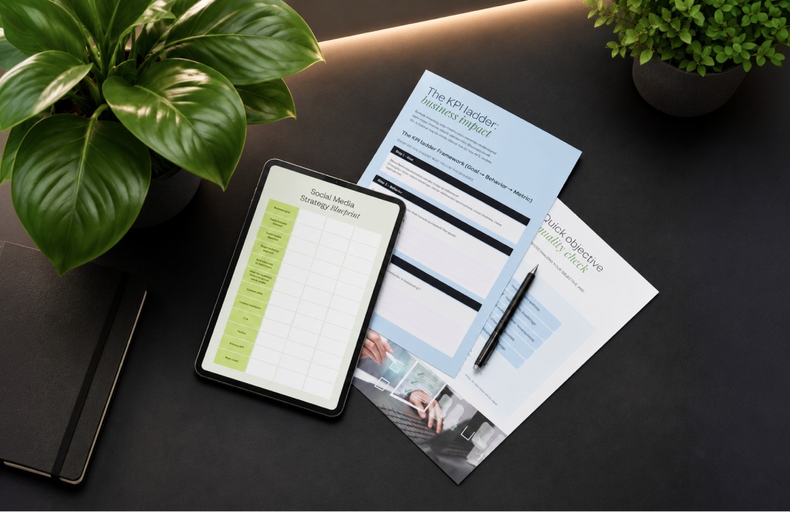
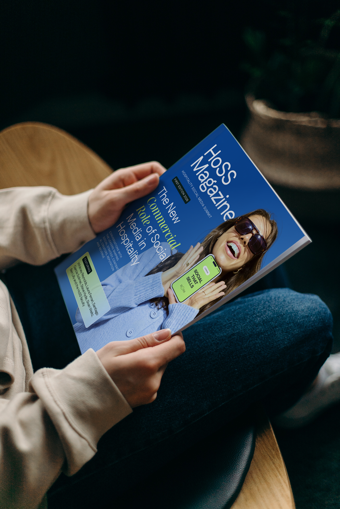
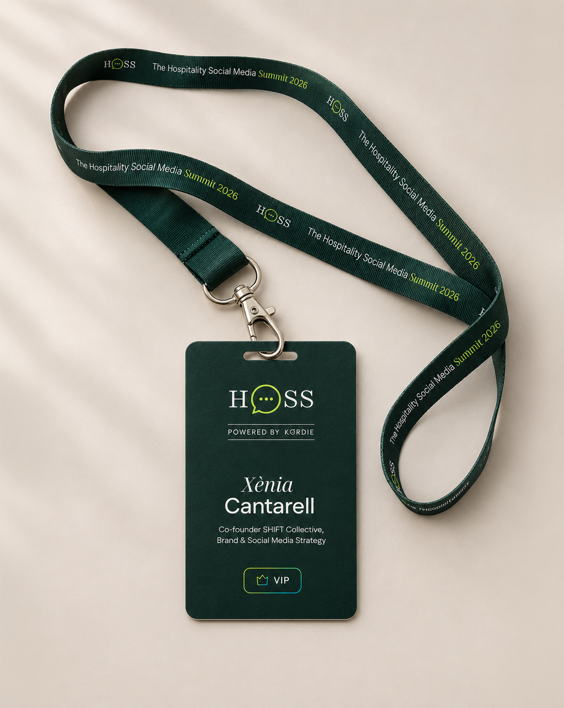
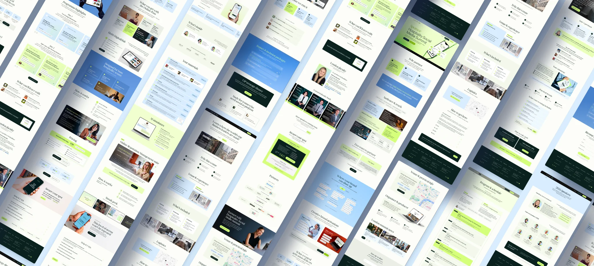
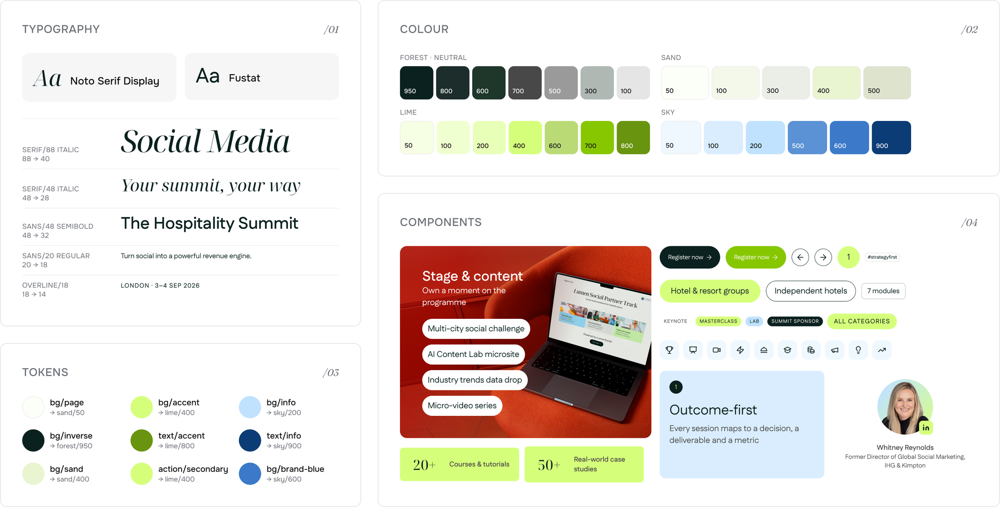

Challenge 01
No history yet
A first-time event, so the site had to earn trust with clear structure, real faces and numbers.
HoSS · Kordie · 2025–2026
From the first web page to the printed badge — the summit’s website, slides, social media, email and event materials, designed as one event.
One event. Every format. Zero mixed signals.
Website, slides, social media, email and print share one language of type, colour and rhythm — online and in the room.




Challenge 01
A first-time event, so the site had to earn trust with clear structure, real faces and numbers.
Challenge 02
Programme, faculty and sponsorship details had to read at a glance on any screen.
Challenge 03
Website, slides, social posts and print all had to look like one event.
Lots to say. One clear
path to the ticket.
Programme, faculty, online pass, venue, sponsorship — each page builds the case and leads to one step: booking a place.
15 unique pages, each with a desktop and a mobile version. Behind them is a lot of visual work: graphics drawn for the site and photos selected and edited, so every section feels like the same event. On every page I set what readers see first, how sections flow and where the key action sits — so dense content still reads at a glance.

From layouts to a design system:
97 components, 166 tokens.
Repeating patterns became components, variables and text styles — so every new page stays on‑brand.

As the programme, faculty and offers took shape, new pages were assembled from the same blocks — so the site kept growing without losing its look or its focus on booking. I worked closely with the copywriters and front-end developers to keep content, design and build in step. A wide set of visuals kept the whole site consistent.
In September 2026, HoSS brought together more than 200 participants from 14 countries for two days at Chicago Booth in London. The website became part of that journey — introducing the summit, guiding people towards the event and, afterwards, preserving its story. As the main site moves into the 2027 edition, the recap captures the people, brands and moments that shaped the first HoSS.Explore the 2026 recap ↘
Printed event materials · Materials will be added here.
The website carried the first summit in 2026: 200+ participants from 14 countries and two days at Chicago Booth in London. The 2026 edition lives on as a recap page .
Social media
/04Social media and email campaigns · Materials will be added here.